My Perfect Creature
A serious game for physiotherapy and anatomy students. You cause a creature's injuries in mini-games, then reason your way to treating them.
- My role
- Game design, content research
- Built with
- Tobi (programming), Almaz (art)
- Engine
- Unity
- Context
- Serious Games, Cologne Game Lab, 2026
- Status
- Playable prototype
The gap between memorising and reasoning
Health science students often do well in lectures and then freeze in their first clinical placements, where they have to decide on a real patient.
We wanted a safe place to make diagnostic mistakes and see what they cause. The answer was a metaphor: you are a mad-scientist professor whose Frankenstein-like creature has fallen apart. Its body parts are running loose in the lab.
Catching each part means playing a mini-game, and each mini-game injures that part the way a real injury happens. Because you caused the damage, you understand how it happened. The fantasy gives enough distance that failing feels like an experiment, not a patient.
Two subject-matter experts, one in anatomy and one in sports injuries and rehabilitation, reviewed the content throughout development.
One case, four steps
- Chase
- Explore the lab and catch the fleeing body parts. Anatomy posters on the walls prompt recall before anything goes wrong.
- Injure
- Each part triggers a skill-based mini-game. The action causes a real musculoskeletal injury, named in pop-up text while it happens and summarised in an injury report.
- Assess
- The parts are stitched back together and you review every injury from the session, including damage that compounds across joints.
- Treat
- Play treatment cards (stretches, mobilisation, nerve tests, surgery) while keeping the creature's fatigue and pain bars below 100.
Five mini-games, five mechanisms of injury
Each input was chosen to mimic the biomechanical stress behind the injury it teaches. Injuries carry over: hurt a finger in Ping Pong and Finger Mimic gets harder.
- Finger Mimic
- Hand
- Mirror a finger gesture with key combos under time pressure. Teaches finger sprains and tendon strain.
- Capture the Frames
- Head and torso
- Head-butt falling picture frames. Teaches cervical flexion and extension trauma.
- Balance on the Eyeball
- Leg
- Keep the creature balanced on a rolling eyeball. Teaches ankle proprioception deficits and knee valgus.
- Ping Pong
- Arm
- Swing the arm paddle in 3D Pong. Teaches rotator cuff stress and elbow overuse.
- Avoid the Spiders
- Full body
- Dodge spiders and mines while earlier injuries slow you down. Teaches how injuries compound.

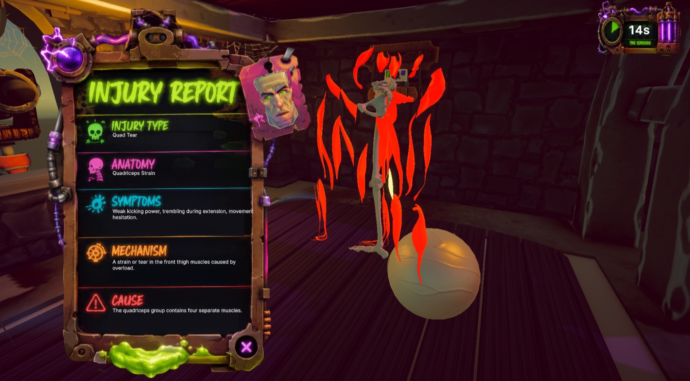

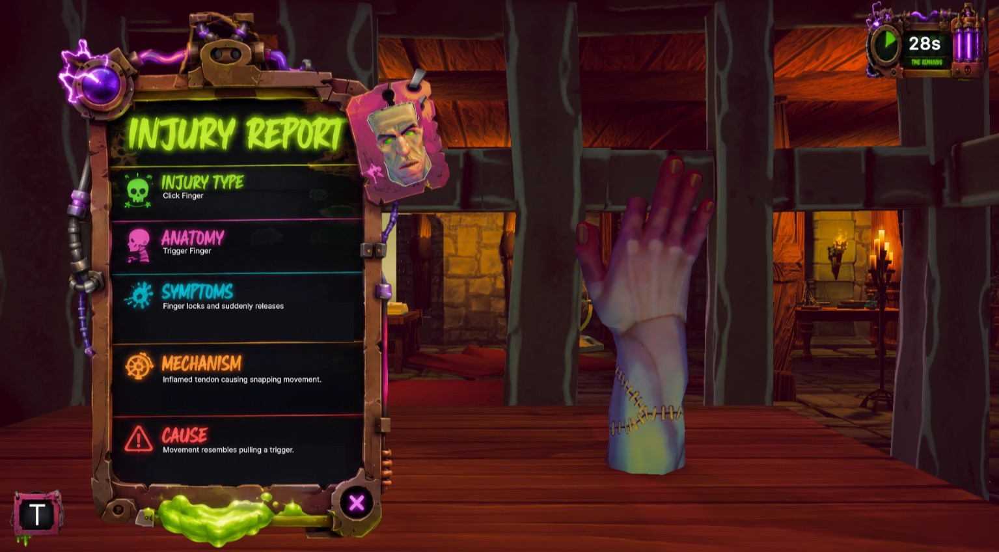

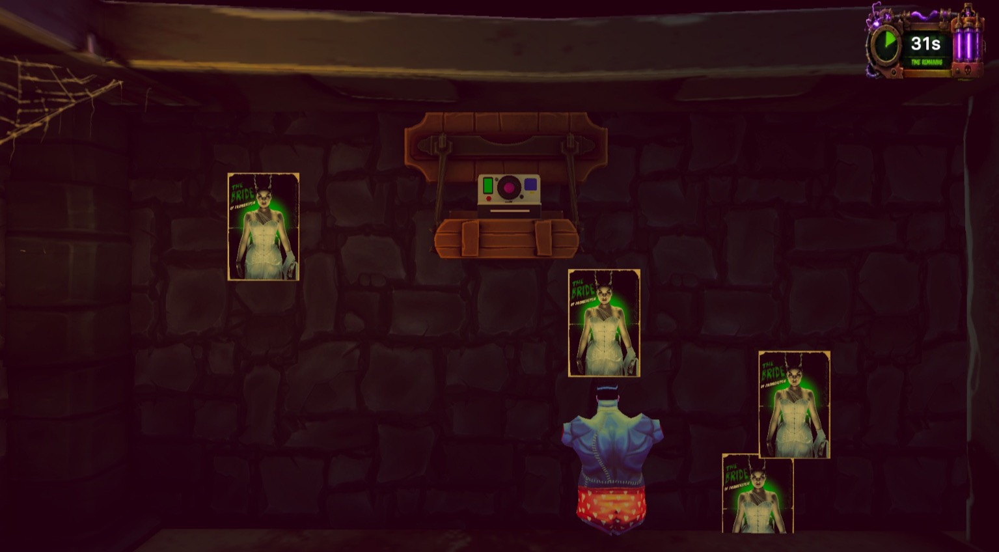

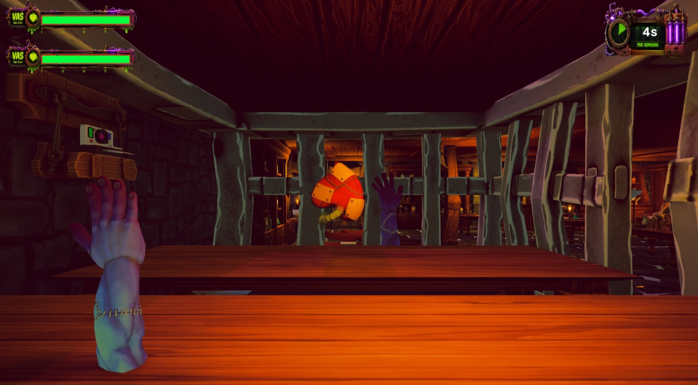

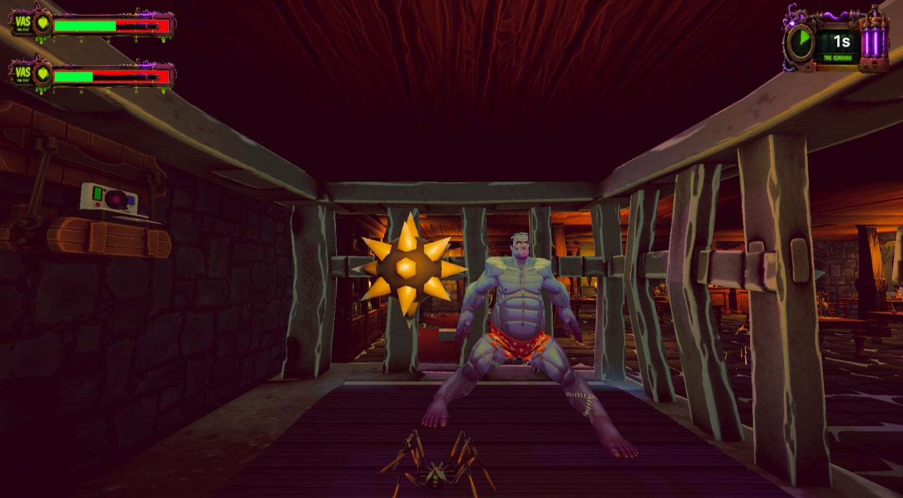

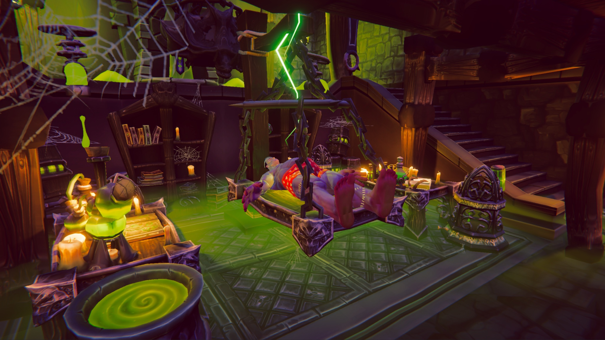

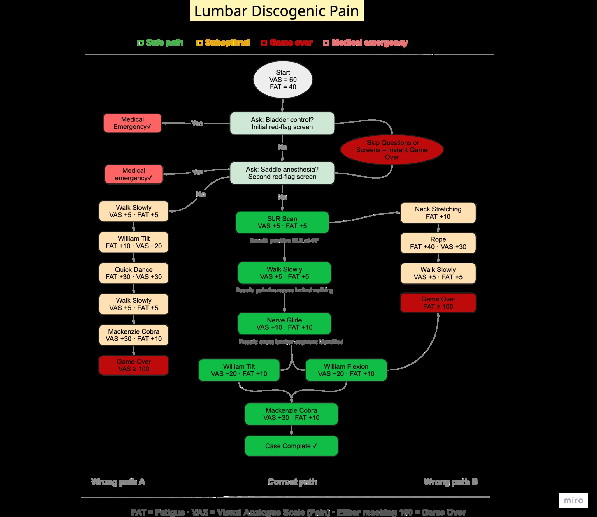
Treatment you have to reason through
Every card moves two bars. Fatigue is how much treatment the patient can take. Pain spikes when a card is wrong for the injury. Either one reaching 100 ends the case.
In the educational version the card values are hidden. A student who knows the contraindications gets through the tree. A student who guesses keeps collapsing the creature, and learns why.
Screening questions come before tests, and tests before loading exercises, the same order a clinician would follow.
The treatment phase is fully designed and documented; its implementation is still in progress.

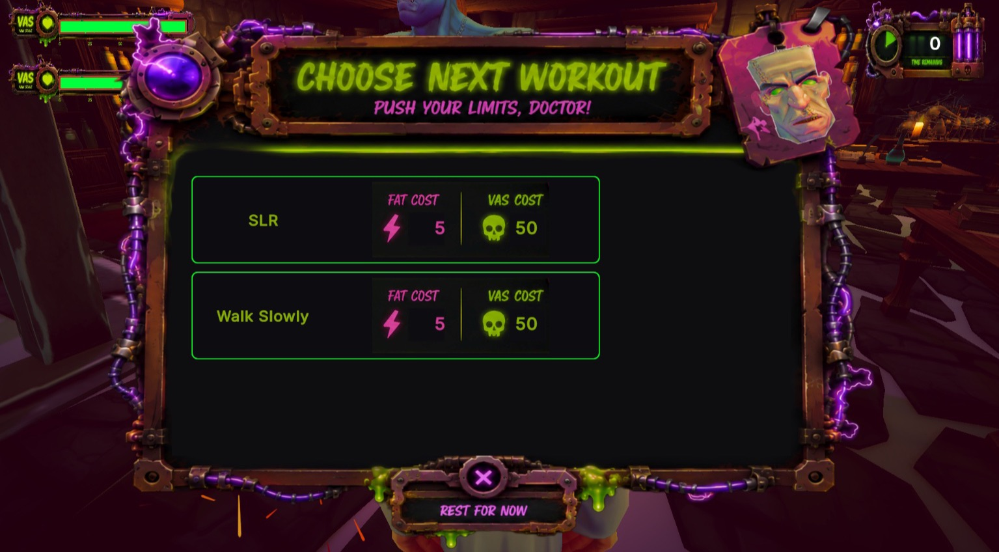

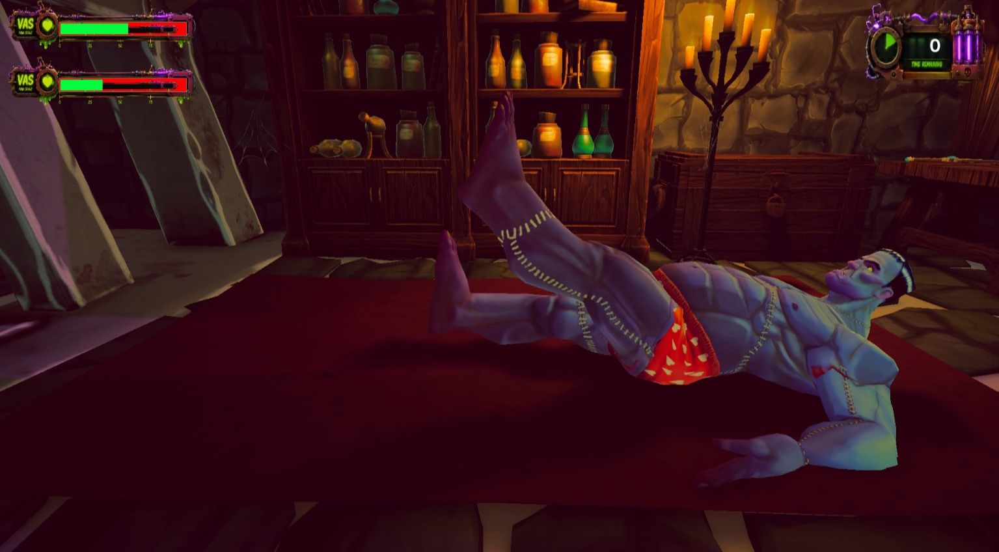
What playtesting changed
We tested informally with the team and with classmates.
- Timing
- Players couldn't tell which injury they had caused. We moved the injury text into the moment of the action instead of after it.
- Scale
- The first lab was too big, and players spent their attention searching instead of learning. We made it smaller and tighter.
- Difficulty
- Hard mini-games crowded out the content. Failing now only sends the part running away again, so skill never blocks learning.
- Scope
- Experts pointed out that real diagnosis looks at the whole body. We moved treatment after assembly, which meant a redesign mid-project.
The lab and its residents

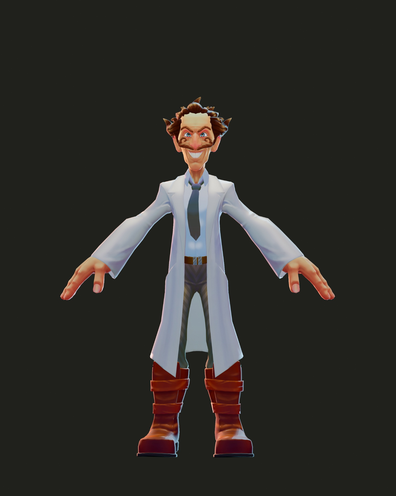

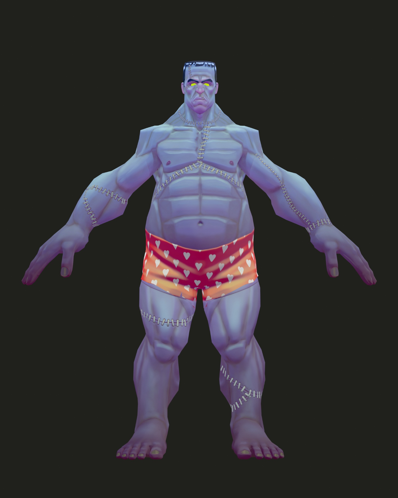

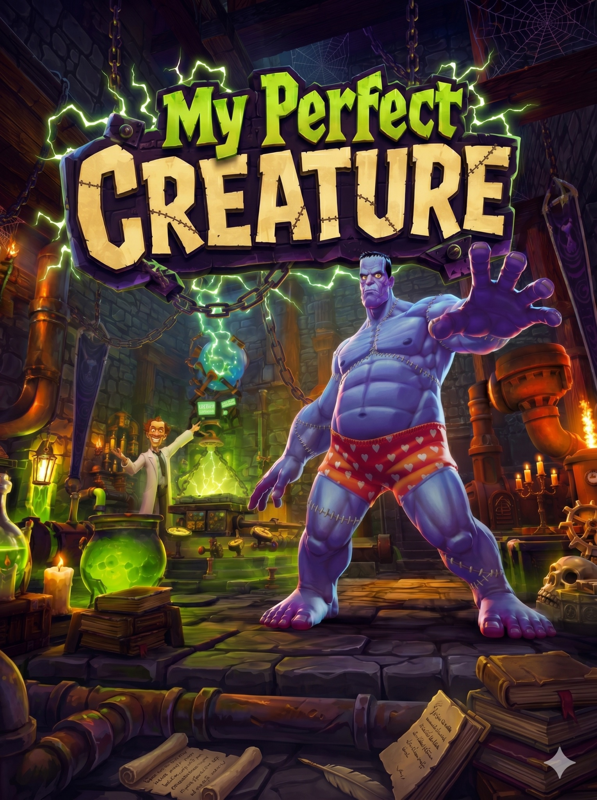

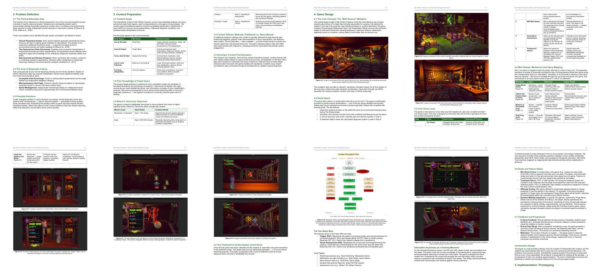
My part
I worked on the game design and the content research, working directly with both experts.
The design work was about turning clinical content into mechanics: which injury each mini-game teaches, how the player's input creates it, and how the treatment cards test the reasoning behind a diagnosis.
Tobi programmed the game and Almaz made the art. Between them they built most of what you see here.